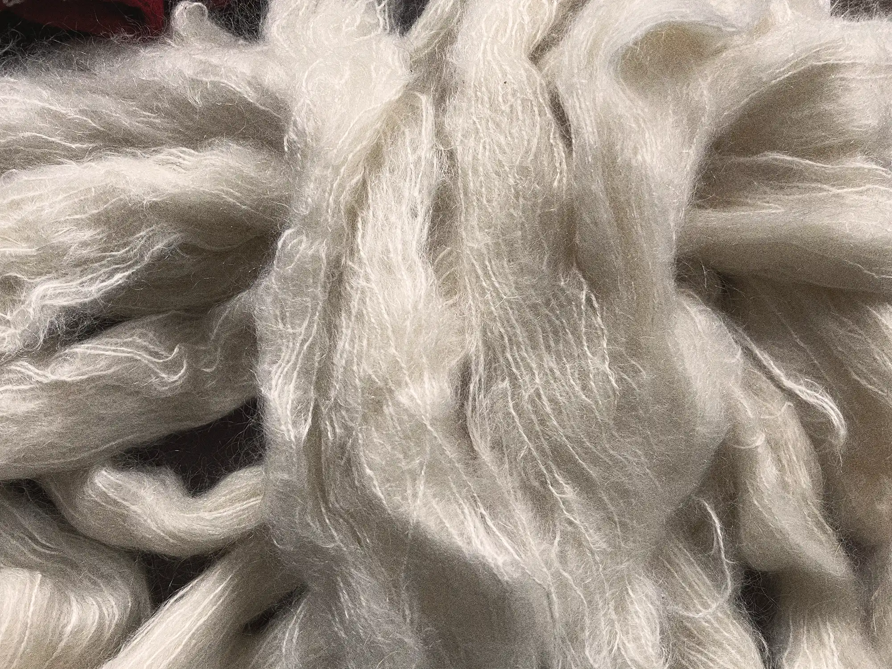
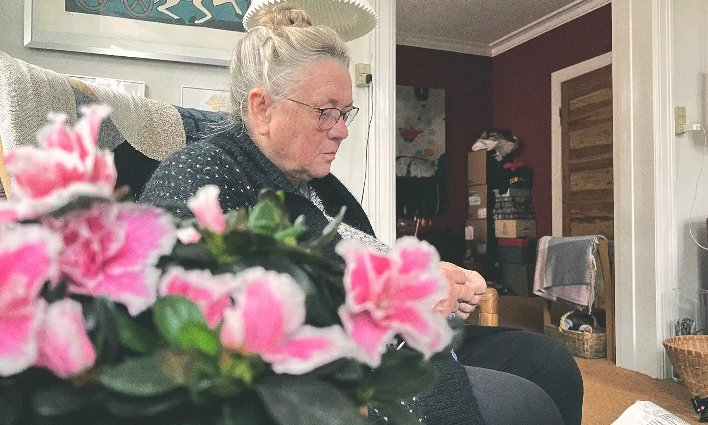

Et
strikkeliv
Mød Lillian, en livslang strikker, der forteller os om hendes strikkeliv.
Strikning er en verden fyldt med farver og mønstre, et univers af kreativitet og ro. Denne gamle kunstform er mere end en hobby; den er en kilde til mental afslapning og et knudepunkt for fællesskab. Gennem strikning opdager vi ikke blot glæden ved at skabe med egne hænder, men også hvordan det kan styrke vores sind og fremme sociale relationer. Strikning inviterer os ind i en verden, hvor hver maske er en del af en større historie, et fællesskab, hvor erfaringer og teknikker deles. Udforsk, hvordan denne berigende aktivitet kan åbne døre til nye venskaber og blive et værktøj for personlig og fælles vækst.